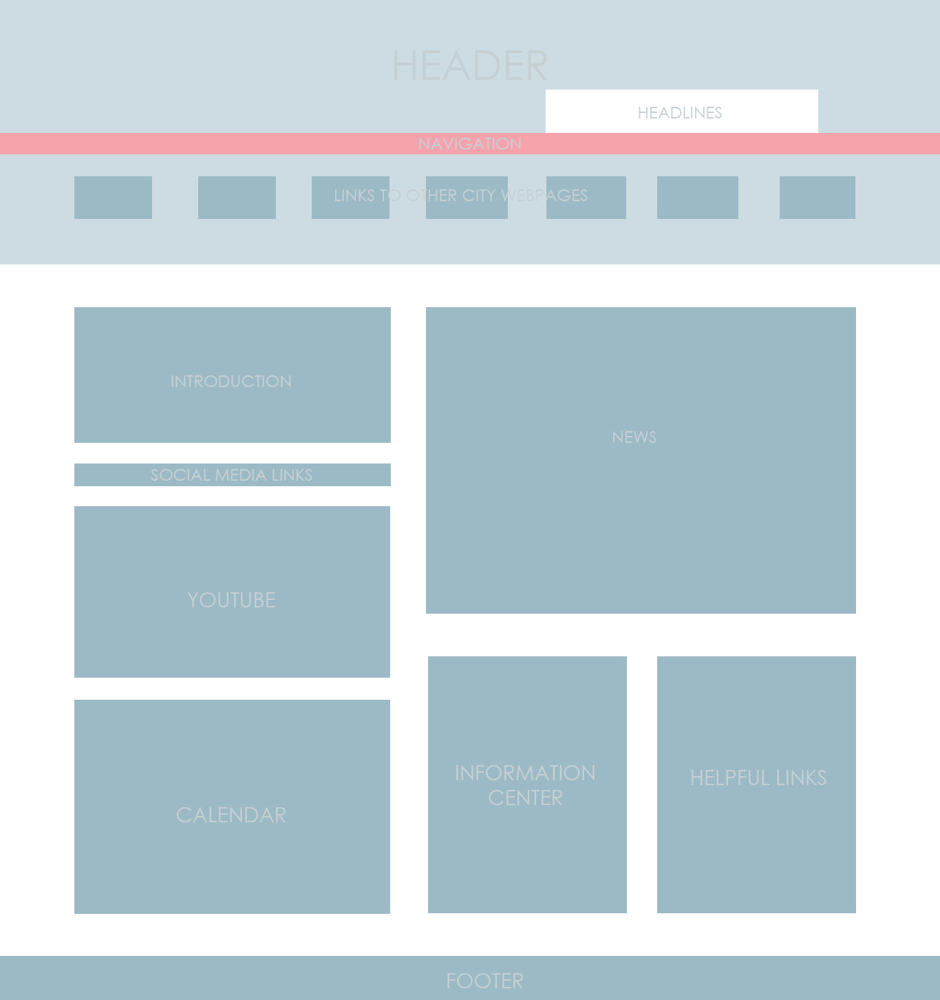
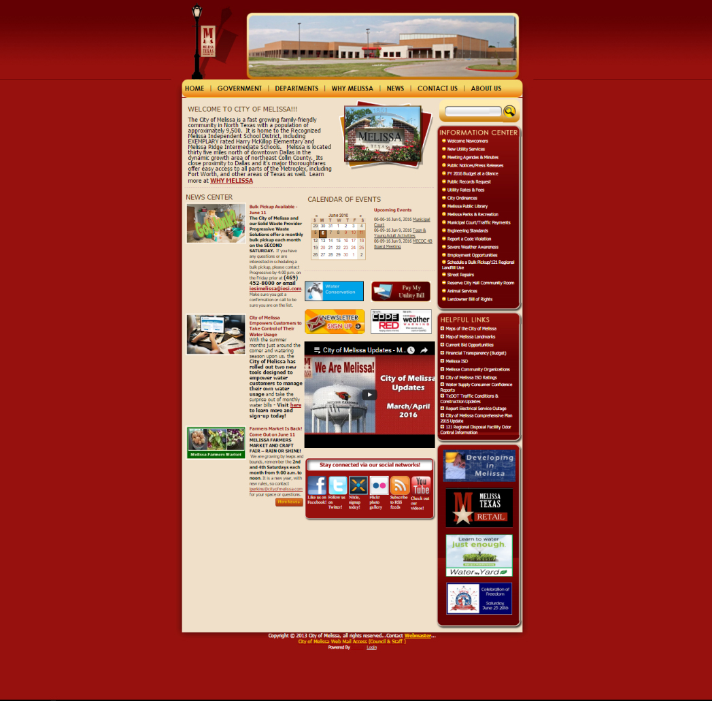
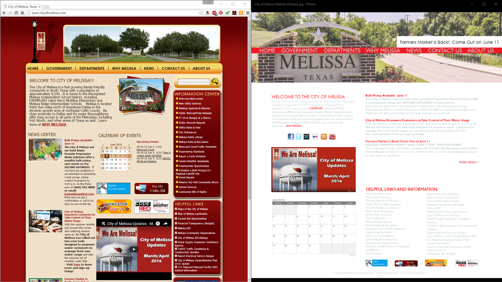
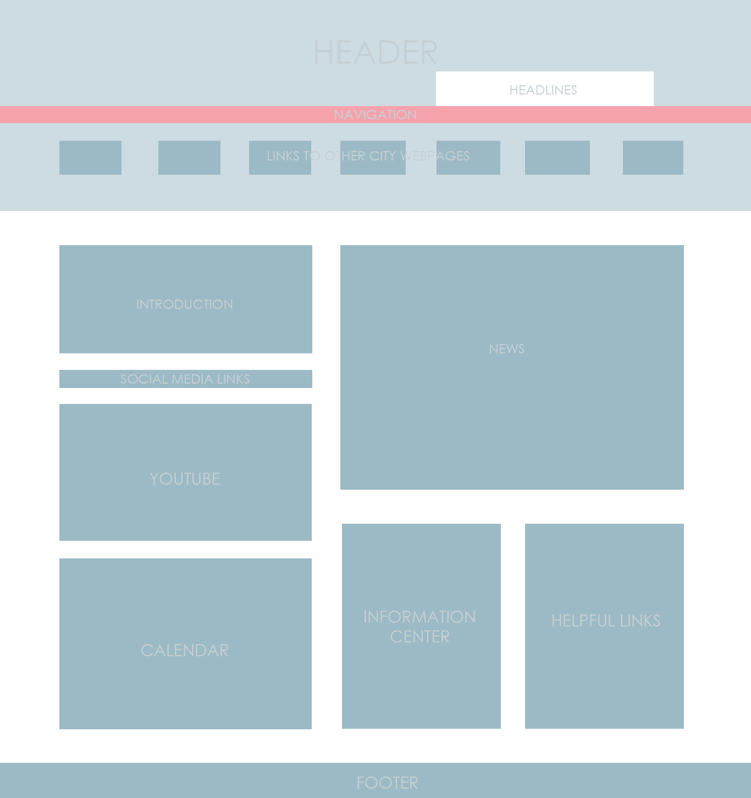
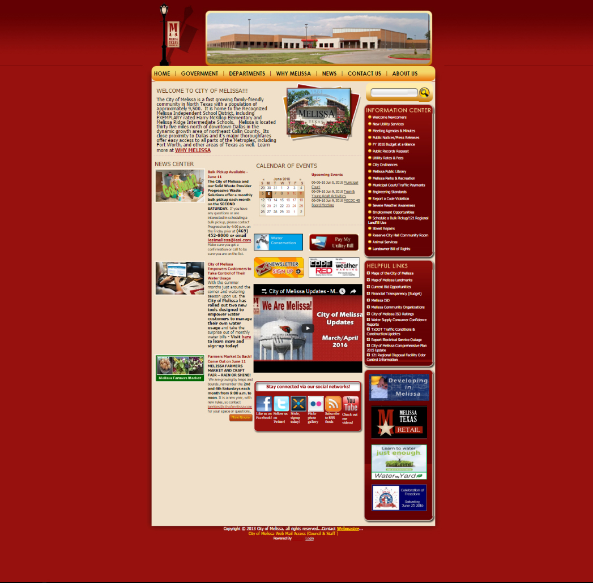
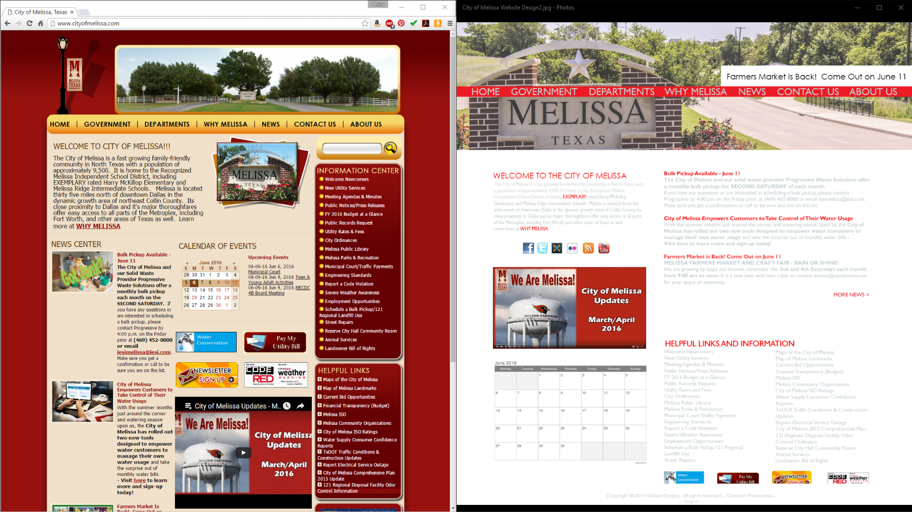

City Website Redesign
This project was done as a learning exercise. I mocked up a more modern design concept for an outdated city website. I plan to code a few of the pages and create a working prototype as time progresses.
◄ Previous Project | Next Project ▶
 





This was a personal project created for my own learning experience.
My goal for this project was to create a more modern design for this city website. The current design looks like it was created a decade ago, and the site is difficult to navigate. The narrow columns also make reading the text on the site difficult.
I used photoshop to create the mockup. I gathered inspiration from other city websites, and also researched how others are making city websites more user friendly.
I started out by looking at other city websites and reading about common problems that city websites have. One thing I kept seeing was the mention of narrow columns and overwhelming amounts of information presented at once. I began by breaking down the current website into different areas; the header, body, sidebar, and footer. I then began sketching my own placement ideas for all of the elements and created a layout in photoshop. After I was happy with the layout I began placing in images and text from the website and creating a cohesive design. The next stage in my process will be to mark out the div placements and measurements. And then of course coding everything into a responsive webpage.
This is an ongoing project that was started in June of 2016.
There is not currently a link to a working prototype.